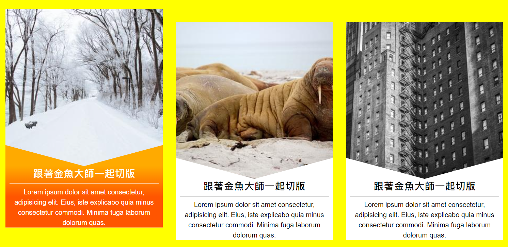

Source Url
教學影片連結
學習點
1. 加了邊框線，會手動將元素的 width 扣回來
假設原本的元素的 css 是這樣
1
2
3
4
| .item {
width: 370;
background-color: #fff;
}
|
想要為它加上粗度為 2px 的邊框，這個時候就要手動將寬度扣回來
1
2
3
4
5
| .item {
width: 376px;
background-color: #fff;
border: 2px solid #000;
}
|
width 會是 376px 的原因為 370px -2px -2px = 376px 所造成的，也就是扣掉左右兩邊的邊框粗度。
2. 達成文字區域斜角的效果
我們會用 :before 偽元素來達成此效果。
1
2
3
4
5
6
7
8
9
10
11
12
13
14
15
16
17
18
19
20
| .item {
width: 370px;
}
.item .txt {
position: relative;
}
.item .txt:before {
content: '';
position: absolute;
top: 0;
left: 0;
width: 0%;
height: 0%;
border-top: 50px solid transparent;
border-left: 185px solid transparent; // 因為父層的寬度 370px 除以二為 185px
border-right: 185px solid transparent; // 因為父層的寬度 370px 除以二為 185px
transform: translateY(-100%);
}
|
道理為下
width: 0%
height: 0%
使得偽元素整體變成一個點，
接著，border-top, border-left, border-right 會以這個點為中心，成輻射狀的方式成長，長到該邊的邊況達到設定的目標為止，
所以，就有三角形的效果囉。
3.整體區塊往上滑動的效果
這邊的效果我們會用 translateY 的方式來達成
當鼠標滑入 .item 時， .item 整體會往上滑動 30px。
接下來，就是程式碼的部分
1
2
3
4
5
6
7
8
9
| item {
// 忽略一些基本的 css
transform: translateY(0px);
transition: all .5s;
}
.item:hover {
transform: translateY(-30px);
}
|
一開始 .item 的起點為 transform: translateY(0px) ，當鼠標滑入後， transform: translateY(-30px) 就會往上滑動 30px 囉。
4. 滑入後，文字區塊背景變色
來將區塊背景變色的效果加在文字區塊 .txt 中
1
2
3
| .item:hover .txt {
background-image: linear-gradient(0deg, #f50 50%, #fa0 100%);
}
|
注意 linear-gradient 的屬性是設在 background-image 上，不是 background-color 上喔。
Final Result
練習連結
Reference
- background-image with linear-gradient
- solution of unnecessary white space between img and its parent